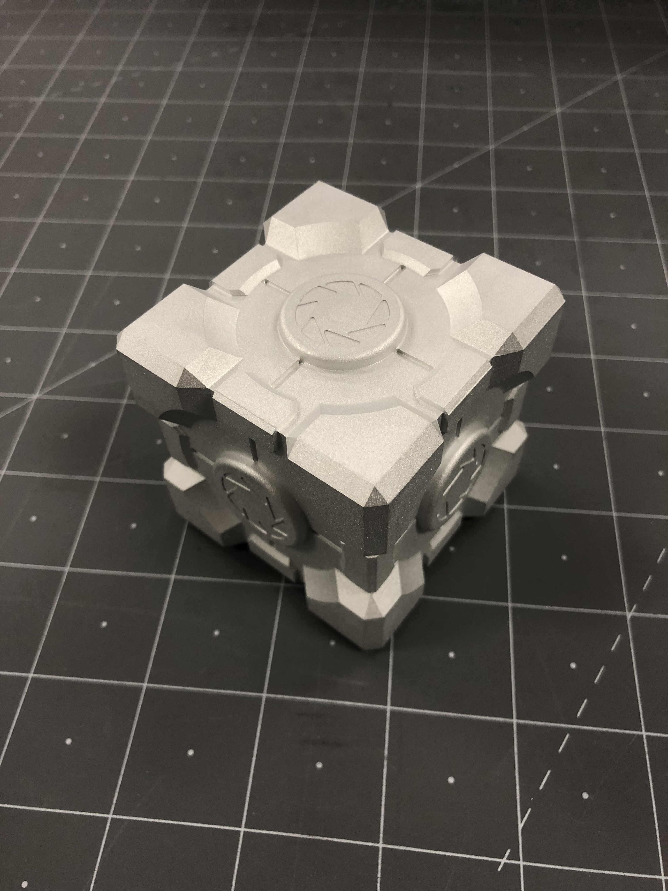

The image on the right was a project I worked on at my previous workplace. The goal was to practice Computer-Aided Manufacturing (CAM) skills. The 3D model was obtained from an open source website, and I made a CAM program that used a 5 axis CNC machine to manufacture this part. The material was aluminum and the matte finish was achieved by sandblasting. It was a rewarding experience overall.
